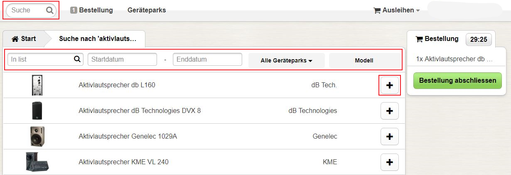
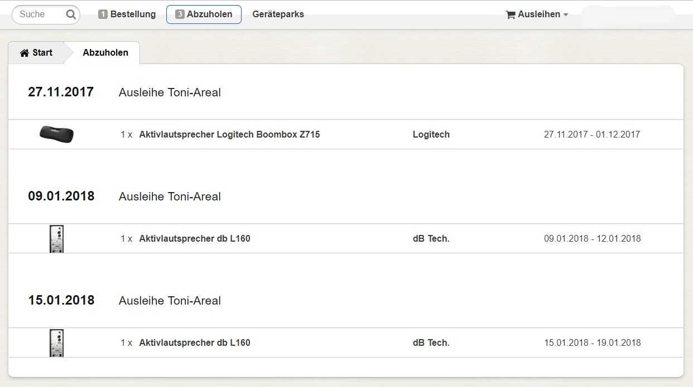

Suchen und Bestellen
- Gegenstand suchen
- Gegenstand bestellen
- Kategorien benützen
- Bestellung abschliessen
- Offene Bestellungen
- Genehmigte Bestellungen
Gegenstand suchen
Einen spezifischen Gegenstand finden Sie am einfachsten mithilfe der Suchfunktion in der Navigationsleiste. Sie können nach Modellbezeichnung, Kategorie, Hersteller usw. suchen.
Die Suche kann mit folgenden Funktionen verfeinert werden:
- Suchfunktion "In list": Filtern der bestehenden Trefferliste mit weiteren Stichwörtern.
- Startdatum/Enddatum: Filtern nach Verfügbarkeit.
- Gerätepark: Filtern nach einem bestimmten Gerätepark.
Ganz rechts in der Filterleiste können Sie den Sortiermodus der Trefferliste wählen (bspw. Modell - alphabetisch aufsteigend).
Bewegen sie den Mauszeiger über einen Gegenstand in der Trefferliste, um ein Pop-Up Fenster mit einer Kurzbeschreibung anzuzeigen. Zur vollständigen Beschreibung eines Gegenstands gelangen Sie mit einem Klick auf selbigen. Klicken Sie auf das Plus-Symbol eines Gegenstands, um dessen Verfügbarkeit anzuzeigen.
Gegenstand bestellen

Ein Kalender zeigt Ihnen die verfügbare Anzahl des gewünschten Gegenstands für jeden Tag an. Klicken Sie auf einen Tag, um diesen als Start- bzw. Enddatum zu definieren. Wenn Sie das Augen-Symbol der Anzeige des Start- bzw. Enddatums oben anklicken, springt der Kalender zum entsprechenden Tag. Mit "Hinzufügen" bestätigen Sie die Ausleihfrist. Der gewünschte Gegenstand ist nun während 30min im Warenkorb vorgemerkt.
Kategorien benützen
Anstatt mit Stichwörtern können Sie auch anhand von Kategorien Gegenstände suchen. Wählen Sie dazu auf der Startseite zuerst eine Kategorie an.

Nun können Sie links eine Subkategorie wählen oder mithilfe der Filterleiste ihre Suche eingrenzen.
Bestellung abschliessen
Wenn Sie rechts auf "Bestellung abschliessen" klicken, wird der Warenkorb angezeigt.

Überprüfen Sie Ihre Ausleihen, bei Bedarf können Sie Anzahl und Ausleihfrist mit "Eintrag ändern" modifizieren. Wenn Sie eine Vormerkung löschen möchten, bewegen Sie den Mauszeiger über deren Dreiecksymbol und klicken auf "Löschen". Bevor Sie die Bestellung absenden können, müssen Sie noch einen Zweck angeben. Bedenken Sie dabei, dass dieser für die Genehmigung Ihrer Ausleihe ausschlaggebend ist. Schlussendlich bestätigen Sie mit "Bestellung abschicken". Ihre Bestellung wird nun von der Ausleihe einer Überprüfung unterzogen, bevor diese genehmigt bzw. abgelehnt wird. Sie werden per E-Mail darüber informiert.
Offene Bestellungen
Klicken Sie in der Navigationsleiste auf "Bestellungen", um eine Übersicht Ihrer Bestellungen anzuzeigen.
Beachten Sie, dass getätigte Bestellungen nicht storniert werden können! Falls Ihre Bestellung nicht genehmigt wurde, wird Sie automatisch aus der Liste offener Bestellungen entfernt.
Genehmigte Bestellungen
Klicken Sie in der Navigationsleiste auf "Abzuholen", um eine Übersicht Ihrer genehmigter Bestellungen anzuzeigen.

Beachten Sie, dass Bestellungen bei der Genehmigung u.U. angepasst (Anzahl, Ausleihfrist, o.ä.) wurden!